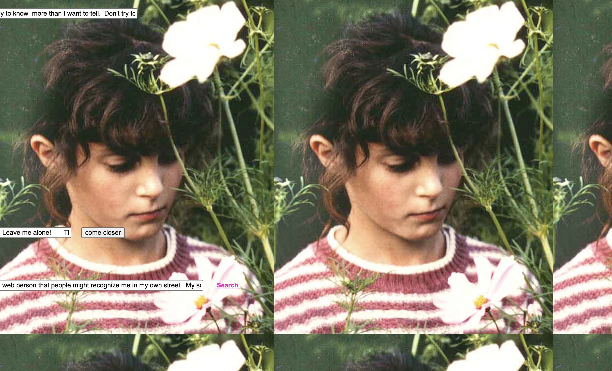
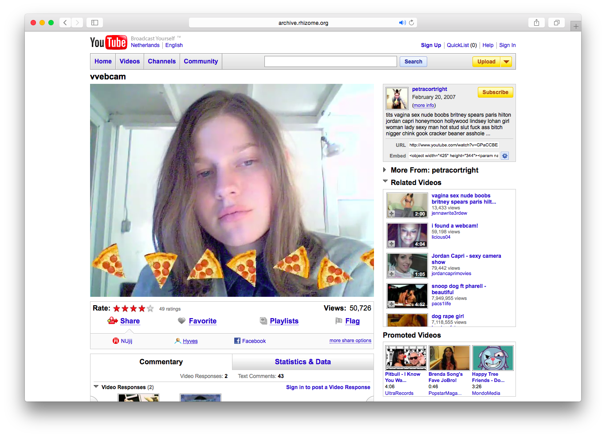
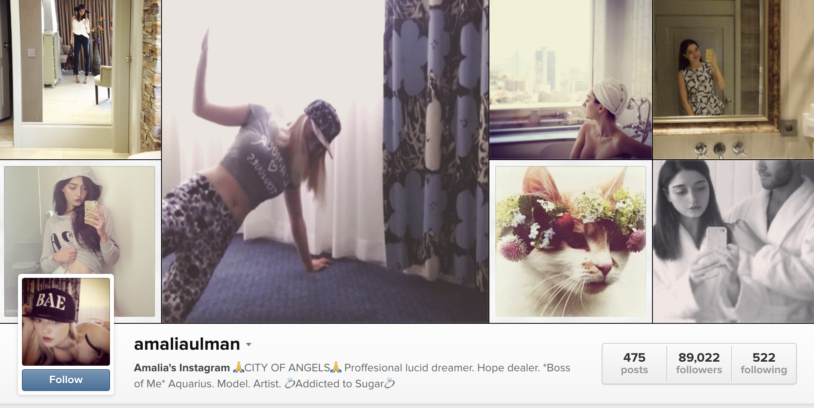

This exhibition serves as a collection of net art pieces in which girls are posed and put on display like dolls. The pieces demonstrate the objectification and advertisement of women and their identities, as well as the unrealistic expectations of perfection that are placed upon women. Each piece shows a girl built to be looked at, and hides a gloomy undertone. These pieces work well together because they represent different parts of girlhood in which ideals of perfection dehumanizes and turns girls into toys. Mouchette, VVEBCAM, and Excellences & Perfections recreate the feminine experience, collected on a webpage and made available for anyone to partake in.

Martine Neddam, 1996
An interactive website designed to seem like it was made by a 13-year-old girl named Mouchette, which explores themes of suicide, loneliness, and desire.
View on Net Art Anthology ♡
Petra Cortright, 2007
A YouTube video in which Cortright stares blankly into her webcam while cartoonish clip art floats around her face, presenting herself like a decorated doll for strangers to comment on.
View on Net Art Anthology ♡
An Instagram profile in which Ulman seemed to undergo a "glow-up" using PhotoShop to change some of her features and represent the unrealistic expectations of women on social media.
More about the artist ♡